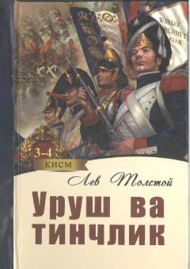

UVLev Tolstoyning mashhur «Urush va tinchlik» romanining davomi.
Ushbu kitob buyuk rus yozuvchisi Lev Tolstoyning jahon adabiyoti durdonasi hisoblangan «Urush va tinchlik» romanining 3-4-kitoblarini o'z ichiga oladi. Asar Abdulla Qahhor va Kibriyo Qahhorova tarjimasida taqdim etilgan bo'lib, unda xalqning tarixiy taqdiri va murakkab insoniy munosabatlar tasvirlangan.